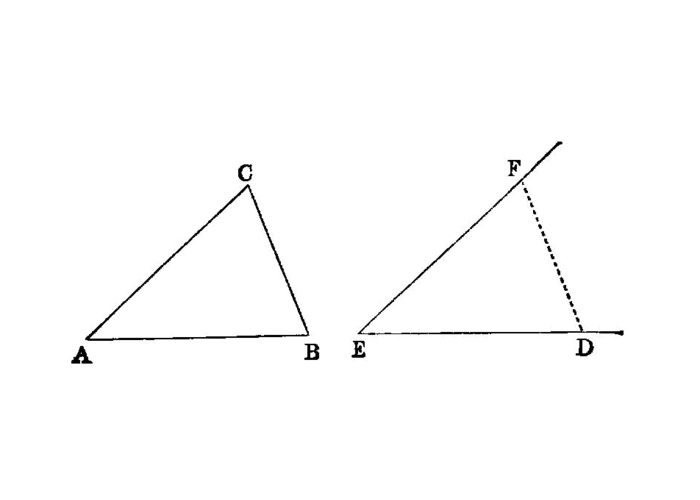

construct a given angle on a given segment¶
I.23
On a given straight line and at a point on it to construct a rectilineal angle equal to a given rectilineal angle.
—Euclid
{kind=link}
Let AB be the given straight line, A the point on it, and the angle DCE the given rectilineal angle;
thus it is required to construct on the given straight line AB, and at the point A on it, a rectilineal angle equal to the given rectilineal angle DCE.
On the straight lines CD, CE respectively let the points D, E be taken at random; let DE be joined, and out of three straight lines which are equal to the three <pb n=”295”/>straight lines CD, DE, CE let the triangle AFG be constructed in such a way that CD is equal to AF, CE to AG, and further DE to FG.
Then, since the two sides DC, CE are equal to the two sides FA, AG respectively,
and the base DE is equal to the base FG, the angle DCE is equal to the angle FAG. [I.8]
Therefore on the given straight line AB, and at the point A on it, the rectilineal angle FAG has been constructed equal to the given rectilineal angle DCE.
references¶
[I.8]: /elem.1.8 “Book 1 - Proposition 8”